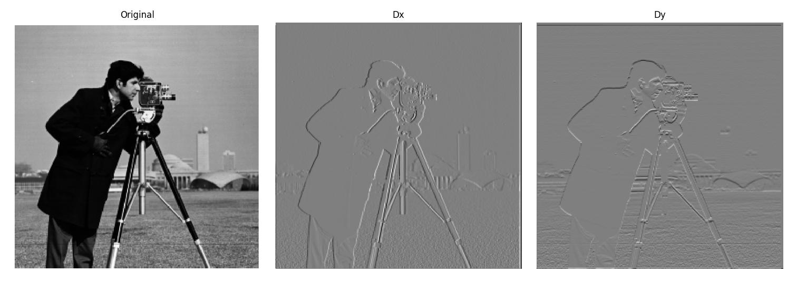

Project 2: Fun with Filters and Frequencies!
Jameson Liu
Overview
Part 1: Fun with Filters
Part 1.1: Convolutions from Scratch!
Part 1.2: Finite Difference Operator

Part 1.3: Derivative of Gaussian (DoG) Filter
Part 2: Fun with Frequencies!
Part 2.1: Image "Sharpening"
Part 2.2: Hybrid Images
Parts 2.3 & 2.4: Gaussian/Laplacian Stacks & Multiresolution Blending (AKA the Oraple!)